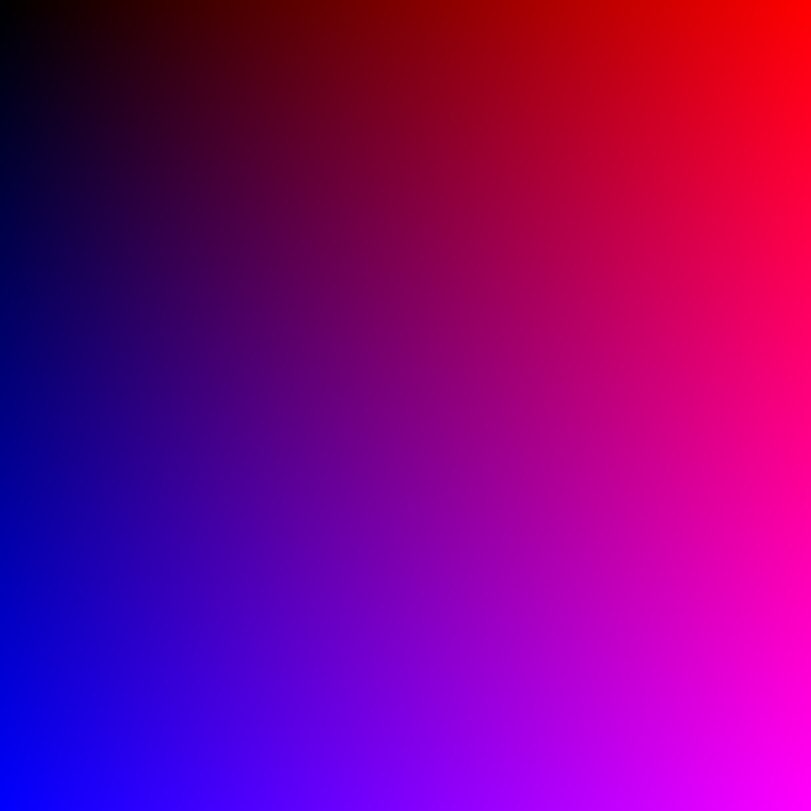

Graphics test
The function assigns blue and red colors to pixels. The intesity is determined by their X (red) and Y (blue) coordinate. The top left pixel has coordinates (0,0).
X increases to the right, Y increases downwards.
The bitmap library (opencv) uses matrices to represent an image. The library uses BGR format (by default).
cv::Mat Bpng(1000, 1000, CV_16UC3, cv::Scalar(52000, 52000, 52000));
for (size_t i = 0; i < Bpng.cols; ++i) {
for (size_t j = 0; j < Bpng.rows; ++j) {
Bpng.at(j,i) = cv::Vec3w(j*65535/1000, 0, i*65535/1000);
}
}

I have noticed, that the star can be created using two lines that connected to each other by multiple lines. These connecting lines' starting point lies on one of the lines and the endpoint lies on the other one. This process is repeated several times. Therefore, I have decided to create a function that draws a ladder in hope to get the desired effect.
The points A,B and C,D define two main (usually longer) line segments of the ladder. The frequency parameter then defines the inverse of how many line segments should connect the AB and CD line segments.
The drawStar function then uses the drawLadder function repeatedly and computes the correct parameters.
void drawLadder(Point A, Point B, Point C, Point D, SVGFile& svgFile, double frequency = 0) {
svgFile.addLine(A, B, COLORS[0], true);
svgFile.addLine(C, D, COLORS[0], true);
double lambda = 0.0;
while (lambda < 1.0) {
svgFile.addLine(A + ((B - A) * lambda), C + ((D - C) * lambda), COLORS[0], true);
lambda += frequency;
}
svgFile.addLine(B, D, COLORS[0], true);
}
void drawStar(SVGFile& svgFile, unsigned starPoints, double frequency = 0) {
for (size_t i = 0; i < starPoints; ++i) {
Point A = {cos(2*M_PI/starPoints * i), sin(2*M_PI/starPoints * i)};
Point B = {cos(2*M_PI/starPoints * (i+1)), sin(2*M_PI/starPoints * (i+1))};
drawLadder({0.0, 0.0}, A, B, {0.0,0.0}, svgFile, frequency);
}
}
You can see here how the drawLadder function works. First I create an ordinary "ladder". Then I flip one of the two main line segments and then I join them on one side to get a part of the star.